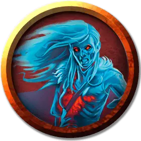

Полководец призраков меча
Sword Wraith Commander
Средняя Нежить, обычно законно-злая

Класс Доспеха 18 (кираса, щит)
Хиты 127 (15к8 + 60)
Скорость 30 футов
| мод | спас | ||
|---|---|---|---|
| СИЛ | 18 | +4 | +4 |
| ЛОВ | 14 | +2 | +2 |
| ТЕЛ | 18 | +4 | +4 |
| мод | спас | ||
|---|---|---|---|
| ИНТ | 11 | +0 | +0 |
| МДР | 12 | +1 | +1 |
| ХАР | 14 | +2 | +2 |
Навыки Восприятие +4
Сопротивление урону некротическая энергия; дробящий, колющий, рубящий от немагических атак
Иммунитет к урону яд
Иммунитет к состояниям отравление, испуг, истощение, бессознательность
Чувства тёмное зрение 60 футов, пассивное Восприятие 14
Языки все, известные при жизни
Опасность 8 (3900 опыта)
Бонус мастерства +3
Среда обитания Болото, Луг
Особенности
Изгоняющее неповиновение. Полководец призраков меча, и все прочие призраки меча в 30 футов от него, совершают с преимуществом спасброски против эффектов, изгоняющих Нежить.
Необычная природа. Призрак меча не нуждается в воздухе, пище, питье и сне.
Действия
Мультиатака. Призрак меча совершает две атаки Длинным мечом или Длинным луком.
Длинный меч. Рукопашная атака оружием: +7 к попаданию, досягаемость 5 фт., одна цель. Попадание: 8 (1к8 + 4) рубящего урона, или 9 (1к10 + 4) рубящего урона, если используется двумя руками.
Длинный лук. Дальнобойная атака оружием:+5 к попаданию, дистанция 150/600 фт., одна цель. Попадание: 6 (1к8+2) колющего урона.
Призыв к чести (1/день). Если призрак меча получает урон в бою, он получает преимущество на броски атак до конца его следующего хода, и в свободном пространстве в пределах 30 футов от него появляются 1к4+1 воинов призраков меча. Воины существуют пока не опустятся до 0 хитов, и они немедленно начинают ходить согласно своей инициативе после хода полководца, используя его значение инициативы.
Бонусные действия
Смертельная ярость. Полководец может совершить одну атаку Длинным мечом или Длинным луком, дополнительно наносящую 9 (2к8) урона некротической энергией в случае попадания и все броски атак против этого существа будут совершаться с преимуществом до начала его следующего хода.
Описание
Полководцы призраков мечей бродят по полям сражений, нападая на любого, кто сомневается в их доблести, но доброжелательно взирая на тех, кто поёт им дифирамбы.
Призраки меча
Когда воин, одержимый славой, без почтения погибает в битве, его доблестный дух может превратиться в призрак меча, что обитает в полях битвы.